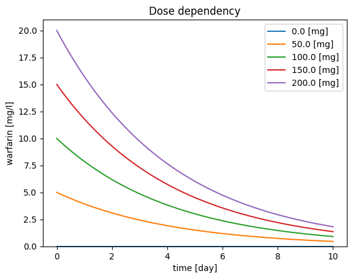

from matplotlib import pyplot as plt
import numpy as np
# simulate
V = 10 # [l]
CL = 0.1 # [L/hr]
Dose = 10 # [mg]
t = np.linspace(start=0, stop=12*24, num=200) # [hr]
C = Dose/V * np.exp(-CL/V * t) # [mg/l]
# plot
f, ax = plt.subplots()
ax.plot(t/24.0, C, label="warfarin", color="black", linewidth=2.0, marker="o")
ax.set_xlabel("time [day]")
ax.set_ylabel("warfarin [mg/l]")
ax.set_ylim(bottom=0)
ax.legend()
plt.show()Structural Models as Algebraic Equations
A pharmacokinetic (PK) model can be simply represented by an algebraic equation. For instance, a one-compartment model with a single intravenous bolus dose can be described by the following equation:
\[\begin{equation} C(t) = \frac{Dose}{V} e^{-\frac{CL}{V}\cdot t} \end{equation}\]
In this model, the equation defines the relationship between the independent variable, time t, and the dependent variable, concentration C. The notation C(t) indicates that C is a function of t. The parameters — Dose, clearance (CL), and distribution volume (V) — are constants and do not vary with time.
Understanding Variables and Parameters
It’s important to distinguish between variables and parameters. Variables (dependent and independent) are used to extract information from the equation. In PK modeling, time is often the independent variable, but the equation can be rearranged for different analyses, such as using CL as the independent variable for sensitivity analysis, with time as a constant.
Exponential Decay and Curve Interpretation
This algebraic equation results in an exponential decay curve, representing the drug concentration over time. This type of curve is crucial for understanding how a drug is metabolized and eliminated from the body.
Practical Applications
PK modeling has several practical applications: - Drug Development: It helps in determining the optimal dosing regimen. - Clinical Pharmacology: It aids in understanding how different patient factors (e.g., age, weight, renal function) affect drug kinetics. - Personalized Medicine: It supports tailoring drug therapy to individual patient needs, enhancing therapeutic outcomes while minimizing side effects.
Key Concepts
- One-Compartment Model: Assumes the body acts as a single, homogeneous compartment where the drug distributes instantly.
- Intravenous Bolus Dose: Refers to the entire dose of the drug administered at once into the bloodstream.
- Clearance (CL): A measure of the body’s efficiency in eliminating the drug.
- Volume of Distribution (V): A theoretical volume that relates the amount of drug in the body to the concentration in the blood or plasma.
Beyond the Basics
While this equation represents a simplified model, more complex models exist that account for multiple compartments, non-linear kinetics, and various routes of administration (e.g., oral, subcutaneous). Advanced PK models can incorporate biological factors and mechanisms, such as enzyme kinetics and receptor binding.
Simulation of an Algebraic Equation
In the first task, we aim to use the algebraic equation to simulate the pharmacokinetics of a drug over time. We will start with a model of warfarin, a widely used anticoagulant.
Background on Warfarin
Warfarin is a commonly prescribed oral anticoagulant that helps prevent blood clots. It is often used in the treatment and prevention of deep vein thrombosis (DVT), pulmonary embolism (PE), and in patients with atrial fibrillation to reduce the risk of stroke. Warfarin works by inhibiting the synthesis of vitamin K-dependent clotting factors, which are essential for blood coagulation.
Importance of Warfarin
Warfarin is crucial in managing conditions that predispose individuals to thromboembolic events. However, it has a narrow therapeutic index, meaning that small changes in its concentration can lead to significant differences in therapeutic effect and toxicity. Monitoring and adjusting the dose of warfarin is essential to ensure its efficacy while minimizing the risk of bleeding complications.
Unique Pharmacokinetics of Warfarin
Warfarin’s pharmacokinetics are complex due to several factors: - Variable Absorption: Although it is generally well-absorbed, factors such as diet and gastrointestinal health can affect its absorption. - Protein Binding: Warfarin is highly bound to plasma proteins, particularly albumin, which influences its distribution and free (active) concentration in the blood. - Metabolism: Warfarin is metabolized by the liver, primarily through the cytochrome P450 enzyme system. Genetic variations in these enzymes can lead to significant interindividual differences in drug clearance. - Long Half-Life: Warfarin has a long half-life, typically ranging from 20 to 60 hours, leading to a steady-state being reached only after several days of consistent dosing.
Simulation Task
To simulate the pharmacokinetics of warfarin using the algebraic equation, we need values for the pharmacokinetic parameters: clearance (CL) and volume of distribution (Vd).
Parameters for Warfarin
- Clearance (CL): The rate at which warfarin is removed from the body. For warfarin, typical clearance values range from 0.1 to 0.2 L/hour.
- Volume of Distribution (Vd): The theoretical volume in which the total amount of drug would need to be uniformly distributed to produce the observed blood concentration. For warfarin, Vd is approximately 10 L.
Simulation Procedure
- Select a Dose: Choose a typical dose of warfarin, such as 10 mg, administered as a single intravenous bolus dose.
- Set Parameters: Use the provided values for CL and Vd.
- Apply the Equation: Use the one-compartment model equation to simulate the concentration of warfarin over time:
\[\begin{equation} C(t) = \frac{Dose}{V} e^{-\frac{CL}{V}\cdot t} \end{equation}\]
- Plot the Concentration Curve: Generate a plot of warfarin concentration (C) versus time (t) to visualize the drug’s pharmacokinetics.
Practical Insight
This simulation will help students understand how warfarin’s concentration changes over time after administration, providing insights into its dosing regimen and the importance of monitoring to maintain therapeutic levels. Additionally, it highlights the significance of individual patient factors in determining the appropriate dose and frequency of administration.
Adaptation to Other Drugs
In this step, we will adapt the parameters (CL) and (Vd) to simulate the intravenous injection of other drugs, such as aspirin and chloroquine.
Background on Aspirin and Chloroquine
Aspirin: Aspirin (acetylsalicylic acid) is a widely used medication with analgesic, anti-inflammatory, and antipyretic properties. It is also commonly used for its antiplatelet effect to prevent cardiovascular events such as heart attacks and strokes. Aspirin works by inhibiting the enzyme cyclooxygenase, which plays a key role in the synthesis of prostaglandins and thromboxanes.
Chloroquine: Chloroquine is an antimalarial drug that has also been used to treat autoimmune diseases such as rheumatoid arthritis and lupus. It functions by interfering with the growth of parasites in red blood cells. Chloroquine has a complex pharmacokinetic profile due to its extensive tissue distribution and long half-life.
Variability in Volume of Distribution and Clearance
The volume of distribution (Vd) and clearance (CL) of drugs can vary significantly between different medications due to factors such as: - Drug Properties: Lipophilicity, molecular size, and plasma protein binding affect how a drug distributes in the body. - Patient Characteristics: Age, weight, organ function (especially liver and kidneys), and genetic factors can influence drug metabolism and elimination. - Pathophysiological Conditions: Diseases and conditions affecting the liver, kidneys, and cardiovascular system can alter pharmacokinetic parameters.
Understanding this variability is crucial for tailoring drug therapy to individual patients and ensuring optimal therapeutic outcomes while minimizing adverse effects.
Exercises
Exercise 1: Solve the Algebraic Equation for Aspirin or Chloroquine
Using the respective CL and Vd parameters from the figure, solve the algebraic equation for the concentration of aspirin or chloroquine over time.
Aspirin Example Parameters: - Clearance (CL): Approximately 50 L/hour - Volume of Distribution (Vd): Approximately 10 L
Chloroquine Example Parameters: - Clearance (CL): Approximately 10 L/hour - Volume of Distribution (Vd): Approximately 5000 L
Exercise 2: Change the Dose and Observe the Effects
Modify the dose of the drug and observe the resulting effects on the concentration-time curves. Consider the following doses: - Aspirin: 500 mg, 1000 mg, 1500 mg - Chloroquine: 200 mg, 400 mg, 600 mg
Plot the concentration curves for each dose and analyze how changes in dosage affect the drug’s pharmacokinetics.
Practical Insight
These exercises will help you understand the impact of different pharmacokinetic parameters on drug behavior in the body. By comparing the profiles of aspirin and chloroquine, you can appreciate the importance of individualized dosing and the challenges associated with drugs that have large volumes of distribution or low clearance rates.
Parameter Scans
To systematically study the effects of various parameters on the pharmacokinetic model, we can perform parameter scans. This involves changing individual parameters systematically to observe their impact on the drug concentration-time profile.
Background and Relevance
Parameter scans are a crucial tool in pharmacokinetic modeling. They allow us to understand how changes in dosing, volume of distribution, and clearance affect drug behavior. This knowledge is essential for optimizing drug dosing regimens, predicting therapeutic outcomes, and identifying potential risks of adverse effects.
By performing parameter scans, researchers and clinicians can: - Optimize Dosing Strategies: Determine the most effective and safe doses for different patient populations. - Understand Drug Behavior: Gain insights into how drugs distribute, metabolize, and eliminate from the body. - Tailor Therapies: Customize treatments based on individual patient characteristics and conditions. - Predict Outcomes: Forecast the effects of parameter variations, such as those due to drug interactions or genetic differences.
Dose Dependency
Concept
Dose dependency refers to how changes in the administered dose of a drug affect its concentration over time. Understanding dose dependency helps in determining the appropriate dose that achieves the desired therapeutic effect without causing toxicity.
Exercise
- Select a Range of Doses: Choose a range of doses for the drug being studied (e.g., 0 mg, 50 mg, 100 mg, 150 mg, 200 mg).
- Simulate Concentration-Time Profiles: Use the pharmacokinetic equation to simulate the concentration-time profiles for each dose.
- Analyze the Results: Plot the concentration versus time for each dose and analyze how the peak concentration (Cmax) and area under the curve (AUC) change with different doses.
# warfarin
V = 10 # [l]
CL = 0.1 # [L/hr]
Dose = 100 # [mg]
t = np.linspace(start=0, stop=10*24, num=200) # [hr]
# Dose dependency
f, ax = plt.subplots(nrows=1, ncols=1)
for Dose in np.linspace(0, 200, num=5):
C = Dose / V * np.exp(-CL / V * t) # [mg/l]
ax.plot(t/24.0, C, label=f"{Dose} [mg]")
# reset dose
Dose = 100 # [mg]
# plot
ax.set_xlabel("time [day]")
ax.set_ylabel("warfarin [mg/l]")
ax.set_ylim(bottom=0)
ax.legend()
ax.set_title("Dose dependency")
plt.show()
Volume of Distribution Dependency
Concept
The volume of distribution (Vd) is a theoretical volume that relates the amount of drug in the body to its concentration in the blood or plasma. It provides insight into how extensively a drug disperses into body tissues. Changes in Vd can significantly affect drug concentration profiles, especially for drugs that distribute widely into tissues.
Exercise
- Select a Range of Vd Values: Choose a range of Vd values for the drug (e.g., 5 L, 10 L, 20 L).
- Simulate Concentration-Time Profiles: Use the pharmacokinetic equation to simulate the concentration-time profiles for each Vd value.
- Analyze the Results: Plot the concentration versus time for each Vd value and observe how the distribution volume influences the drug’s concentration, half-life, and overall exposure.
Practical Insight
By performing parameter scans on dose and volume of distribution, students can gain a deeper understanding of the dynamic nature of pharmacokinetics. These exercises will illustrate: - Non-Linear Relationships: How parameters do not always change drug concentration linearly. - Therapeutic Window: The importance of maintaining drug concentrations within a therapeutic range. - Individual Variability: How patient-specific factors might necessitate adjustments in dosing or consideration of different pharmacokinetic profiles.
Example Applications
- Dose Adjustment: For patients with renal or hepatic impairment, dose adjustments may be required to avoid toxicity.
- Drug Development: In the early stages of drug development, parameter scans help in predicting human pharmacokinetics based on preclinical data.
- Personalized Medicine: Tailoring doses based on genetic makeup and other patient-specific factors to achieve optimal therapeutic outcomes.
By understanding and applying these concepts, students can appreciate the complexities involved in pharmacokinetic modeling and the importance of personalized approaches in clinical pharmacology.
# V dependency
f, ax = plt.subplots(nrows=1, ncols=1)
for V in np.linspace(10, 100, num=5):
C = Dose / V * np.exp(-CL / V * t) # [mg/l]
ax.plot(t/24.0, C, label=f"{V:.2f} [l]")
# reset volume
V = 10 # [mg]
ax.set_xlabel("time [day]")
ax.set_ylabel("warfarin [mg/l]")
ax.set_ylim(bottom=0)
ax.legend()
ax.set_title("Volume dependency")
plt.show()Exercise: Implement a Parameter Scan for Clearance (CL)
Objective: To understand how changes in clearance (CL) affect the pharmacokinetics of a drug, implement a parameter scan for CL values ranging from 0.1 to 3 L/hour.